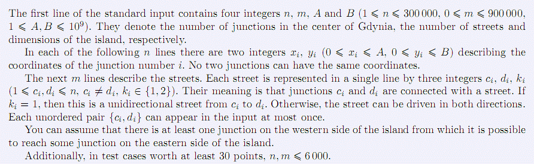

第1行包含4个整数n, m, A, B(1≤n≤300000, 0≤m≤900000,1≤A,B≤109)，
分别表示格丁尼亚市中心的节点数，街道数和岛屿的尺寸。
接下来的n行，每行包含两个整数xi，yi (0≤xi≤A,0≤yi≤B)，表示第i个节点的坐标。任意两个节点的坐标都不相同。
再往下的m行表示街道，每条街道用3个整数ci, di, ki（1≤ci, di≤n, ci≠di, ki∈{1,2}），
表示节点ci、di有街道连接
如果ki=1,表示从ci到di的街道是单向的，否则，这条街道可以双向行驶。每个无序对{ci, di}最多出现1次。
你可以假设西岸节点中至少有1个能够到达东岸的一些节点。